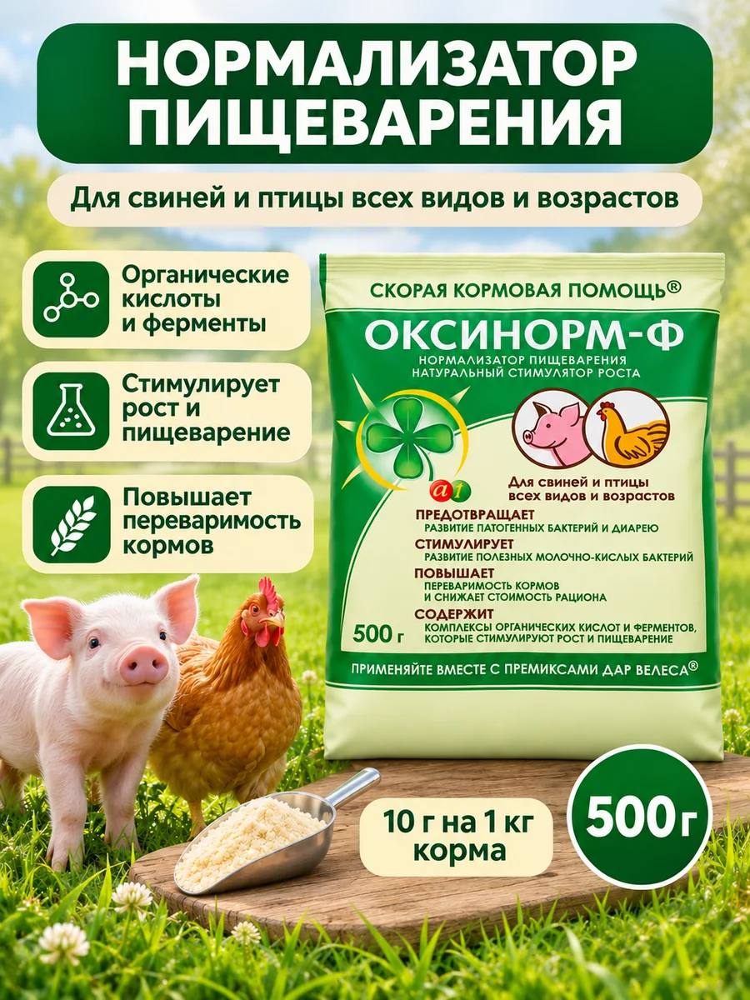

Как ввести премикс в корм: пошагово и без ошибок
Премикс работает только при точной дозировке и равномерном перемешивании. Разбираем, как посчитать норму и как смешать так, чтобы доза дошла до каждой птицы.
Коротко
- Премикс — это добавка, а не корм. В чистом виде его не скармливают.
- Норма ввода считается от массы корма, а не от массы животного.
- Пересчёт простой: 0,5% = 5 г на 1 кг корма, 1% = 10 г/кг, 3% = 30 г/кг.
- Перемешивать нужно до однородности: иначе одна птица получит двойную дозу, а другая — ничего.
- Не добавляйте премикс в горячий корм, если производитель указал ограничение по температуре.
Что такое премикс и чем он не является
Премикс — смесь витаминов, минералов и других компонентов на наполнителе. Его задача — дополнить основной корм, а не заменить его. Доля ввода обычно небольшая: источники называют диапазон 0,5–5%, а чаще всего встречается 1%.
Из этого следует главное: ошибка в дозировке здесь стоит дороже, чем при кормлении зерном. Специалисты прямо предупреждают, что неправильная дозировка опасна и соблюдать нужно именно норму производителя.
Шаг 1. Найдите норму на упаковке
Норма всегда указана в процентах от массы корма или в граммах на килограмм. Иногда рядом даётся эквивалент в ложках — но только для этого конкретного товара.
Универсальной таблицы ложек не существует. Насыпная плотность у премиксов разная: 10 г одного премикса — это примерно столовая ложка, а 30 г другого — две-три. Пользуйтесь ложками только там, где производитель сам их указал, и лучше взвешивайте.
Шаг 2. Переведите проценты в граммы
Арифметика здесь предельно простая: процент от массы корма умножаем на 10 и получаем граммы на килограмм.
| Норма | Граммов на 1 кг корма | На 10 кг корма |
|---|---|---|
| 0,5% | 5 г | 50 г |
| 1% | 10 г | 100 г |
| 3% | 30 г | 300 г |
Посчитать на ваш объём корма можно в калькуляторе — он подставляет норму с упаковки выбранного товара.
Шаг 3. Смешайте ступенчато
Главная практическая сложность: 100 граммов премикса нужно равномерно распределить по 10 килограммам корма. Если высыпать его сверху и размешать лопатой, часть птицы получит избыток, а часть — ничего.
Поэтому смешивают в несколько приёмов:
- Отмерьте нужную дозу премикса.
- Смешайте её с небольшим количеством корма — примерно равным по объёму.
- Полученную смесь перемешайте с порцией побольше.
- И только потом — со всем объёмом корма.
Так вы увеличиваете объём постепенно, и распределение получается равномерным. Мешать нужно до однородного вида — без заметных островков премикса.
Этот приём — обычная практика кормления, а не требование производителя. Но он решает ровно ту задачу, о которой предупреждают специалисты: доза должна дойти до каждого животного.
Шаг 4. Следите за температурой корма
Часть производителей прямо указывает: не вводить премикс в горячий корм. Например, для премиксов нашего каталога встречается ограничение — не выше 45 °C.
Витамины разрушаются при нагреве, поэтому во влажную мешанку премикс добавляют, когда она остыла, а не сразу после запаривания.
Частые ошибки
- Сыпать «на глаз». Разница между 1% и 3% — трёхкратная.
- Считать от массы животного. Норма считается от массы корма. Пересчёт вида «3% от веса коровы» не имеет смысла.
- Давать в чистом виде. Некоторые производители это прямо запрещают.
- Смешивать сразу весь объём. Без ступенчатого смешивания однородности не добиться.
- Готовить впрок на месяц. Готовьте столько, сколько съедается за несколько дней, и храните по условиям с упаковки.
Когда обращаться к ветеринару
При любых признаках заболевания — вялости, отказе от корма, поносе, падеже — обращайтесь к ветеринарному специалисту. Премикс является кормовой добавкой и лечением не заменяется.
Частые вопросы
Сколько премикса на 10 кг корма?
Зависит от нормы. При 1% — 100 г, при 3% — 300 г, при 0,5% — 50 г. Норму смотрите на упаковке вашего товара.
В сухое зерно или во влажную мешанку?
И так, и так, если производитель не запретил. Важнее равномерно перемешать и не добавлять премикс в горячий корм.
Можно ли давать премикс отдельно, как лакомство?
Нет, если производитель указал, что в чистом виде скармливать нельзя. Премикс рассчитан на равномерное распределение по корму.
Что будет, если дать больше нормы?
Превышать норму не нужно: это риск передозировки по отдельным компонентам. Если премикс случайно насыпан в избытке, корм лучше не скармливать.
Можно ли пропускать премикс через гранулятор?
Производители этого обычно не описывают. Мы запросили позицию по нашим товарам — до ответа уточняйте у производителя.
Что взять

Оксинорм-Ф «Скорая кормовая помощь», премикс для птицы и свиней, 500 г Кормовые добавки Подробнее Суста-Vet «Скорая кормовая помощь», премикс для птицы, 500 г
Кормовые добавки
Подробнее
Суста-Vet «Скорая кормовая помощь», премикс для птицы, 500 г
Кормовые добавки
Подробнее
Цены на сайте демонстрационные. Купить можно на Ozon — кнопка на странице товара.